Research · Novel Mobile Robots Lab, UIUC
Suction climbing robot for GelBelt tactile inspection
A robot that carries the GelBelt tactile sensor up walls and across inverted and curved surfaces, so aircraft skins can be inspected by touch at high resolution.

Challenge
Carry a tactile sensor across vertical, inverted, and curved surfaces while pressing it into the surface with at least 10 N.
Approach
Active suction cups on a roller-chain drive, a magnet-switched valve on every cup, and a spring suspension sized from measured cup stiffness.
Where it stands
Adhesion and suspension passed inverted and curved-surface tests. The full robot is assembled and driving; climbing tests are next.
- My role
- Undergraduate Researcher. Adhesion, suspension, drive, pneumatics, and integration
- Timeline
- Aug 2025 – Present
- Lab
- Novel Mobile Robots Lab, with RoboTouch Lab
- Tools
- Force-torque testbed, Onshape, Python, Raspberry Pi 5, Dynamixel
Problem
Aircraft skins and large composite structures need regular inspection for defects, and inspecting them by hand is slow and error-prone.
GelBelt is a vision-based tactile sensor: an elastomer belt rolls over the surface while an internal camera reconstructs its geometry. Until now it was moved by a robot arm, so it could only scan what the arm could reach. Our goal is a robot that carries it anywhere on the structure, including up walls and upside down.
- Press the GelBelt into the surface with at least 10 N
- Support about 25 N of sensor, drive, and vacuum hardware in any orientation
- Keep continuous, even contact for consistent mapping
- Tolerate rivets, seams, paint variation, and dust
Adhesion selection
We built a test rig to measure suction-cup adhesion. A cup on a force-torque sensor rides a linear rail: it presses onto an acrylic plate at a set normal force, then pulls off. The plate sits on an XY stage, so the same setup measures shear before detachment.

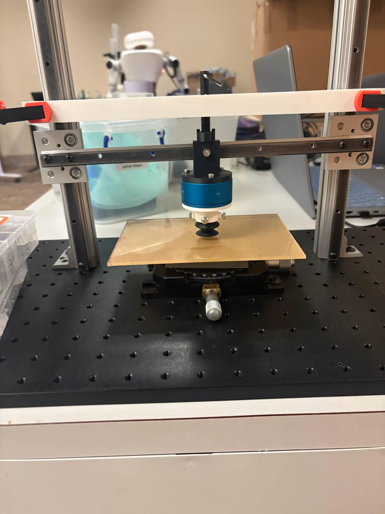
Cup on a force-torque sensor over an XY stage

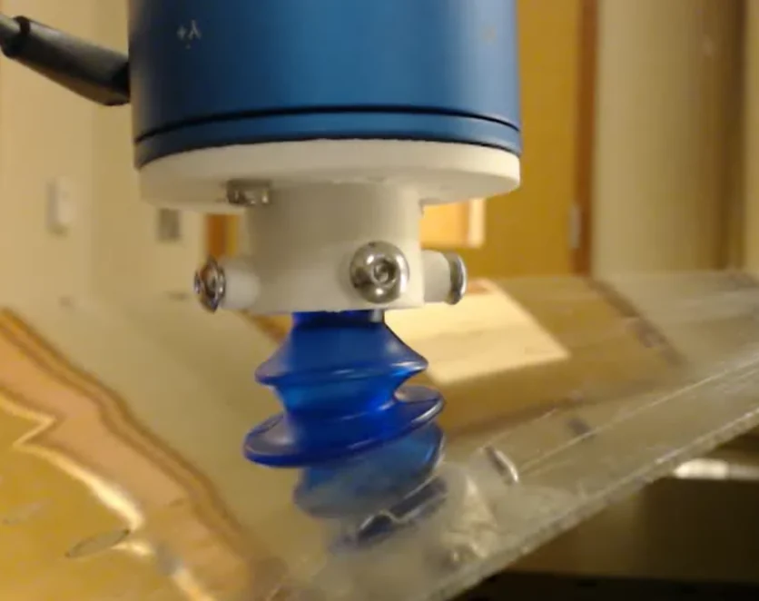
Bellowed active-suction cup on the acrylic plate
| Material | Preload (N) | Pull force (N) |
|---|---|---|
| Plastic | 7 | 26.78 |
| Buna-N rubber | 6 | 10.21 |
| Buna-N rubber | 7 | 10.85 |
| Buna-N rubber | 8 | 10.85 |
| Buna-N rubber | 9 | 9.86 |
| Vinyl plastic | 6 | 25.63 |
| Vinyl plastic | 7 | 30.36 |
| Vinyl plastic | 8 | 29.33 |
| Vinyl plastic | 9 | 21.70 |
A single vinyl cup held more than 9 N in shear, so three cups can carry the robot. It still pulled more than 20 N on a curved aluminum profile that resembles a wing, and on rougher textured surfaces. Active suction doubled shear holding over passive suction and removed the need for a pressing force, so we committed to active suction. Four cups fit in contact at once, which gives redundancy if one leaks.
We also tested a propeller-based alternative. One Vertiq 23-06 motor gave only about 5.2 N of continuous thrust, even close to the surface, so a quadrotor would give about 20 N, short of the 25 N required.

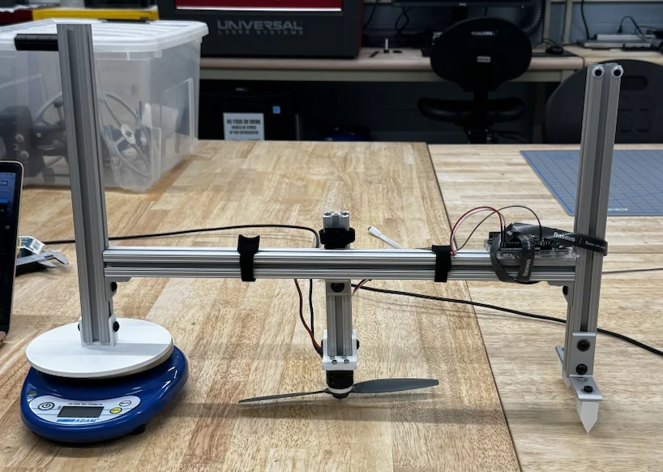
Motor on a pivoting beam over a scale, propeller facing a "ceiling"

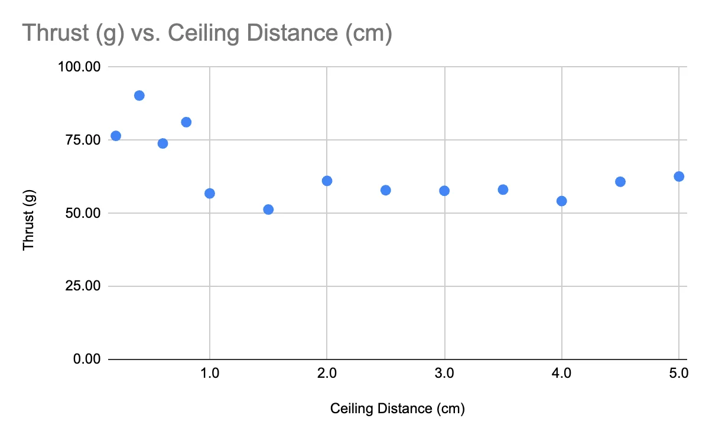
Thrust vs. propeller-to-ceiling distance

Suspension design
The sensor needs more than 10 N of even contact force while the cups carry the weight. We measured each cup’s force vs. deflection: it was linear at about 14.4 N/cm (R² = 0.987). We then modeled the cups and suspension springs as springs in parallel and picked a 9.19 N/cm spring with about 1.5 cm of offset.
At a 2.116 kg system mass, the module passed inverted tests on acrylic and on the curved aluminum profile with clean sensor readings. It also held onto a textured wall and read the texture.

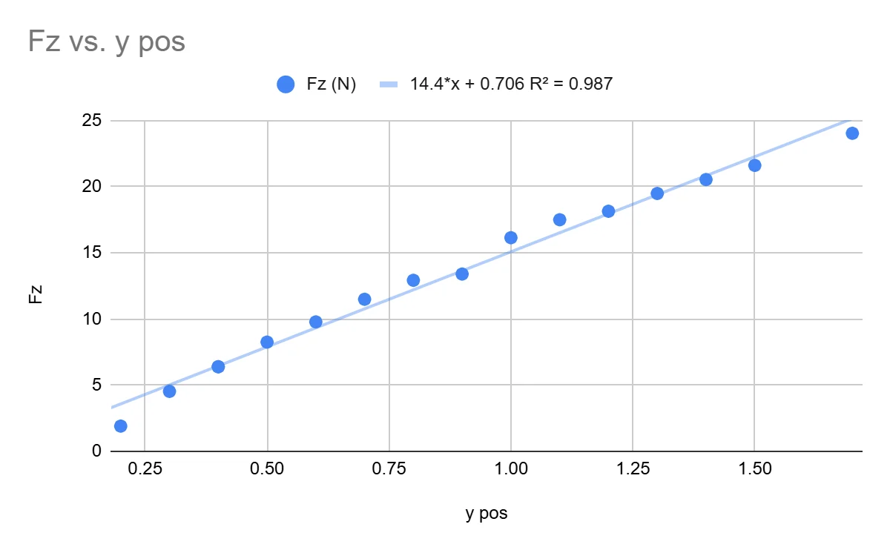
Cup force vs. deflection, linear fit

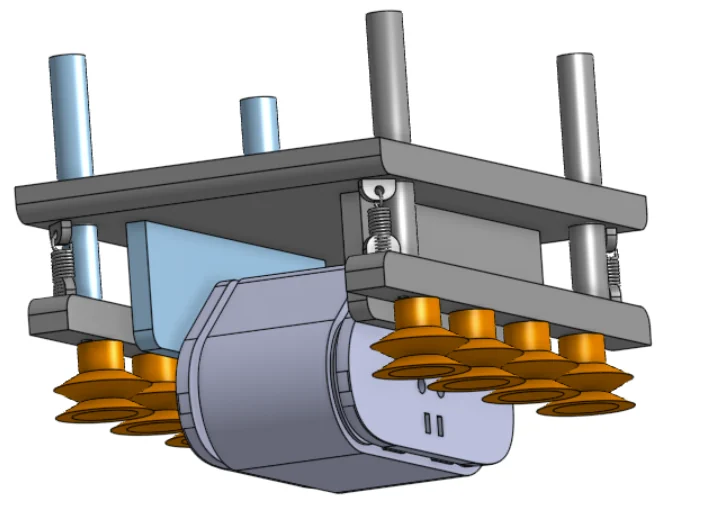
Suspension module CAD

Curved aluminum profile test, with the GelBelt image

Inverted test, with the GelBelt image

Holding onto a textured wall
Drive system
A timing belt couldn’t take the torsion from the robot’s weight, so the drive uses a roller chain that carries the suction cups.
For motor sizing: at the 4 cm/s target speed, the sprocket turns at 24 RPM. Lifting a 2 kg robot takes about 0.8 W, or 0.32 N·m, well under the Dynamixel XC330’s 0.93 N·m stall torque.
- One-minute hold tests at 0°, 30°, and 60°: cup deformation stayed under 1 cm (about 0.3 cm at 30° and 0.6 cm at 60°)
- Turning-radius test: a 50.8 mm OD sprocket carried the chain around successfully
- Center-of-mass analysis: mapped where the COM can sit while the cups hold at every surface angle

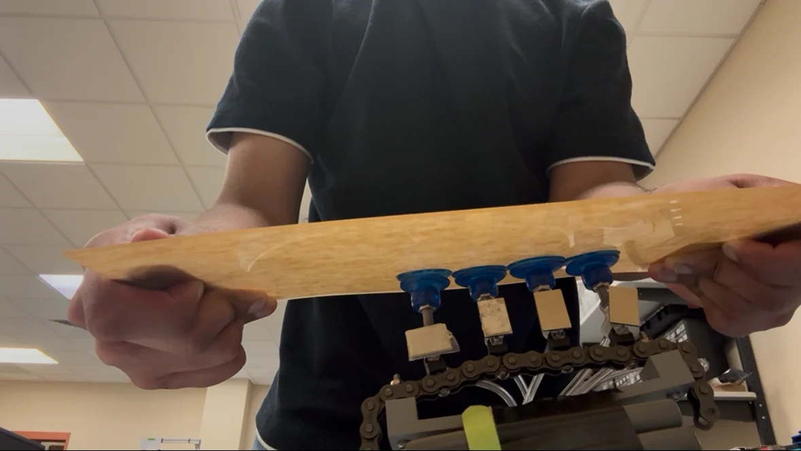
Cup deformation measured while holding at an angle

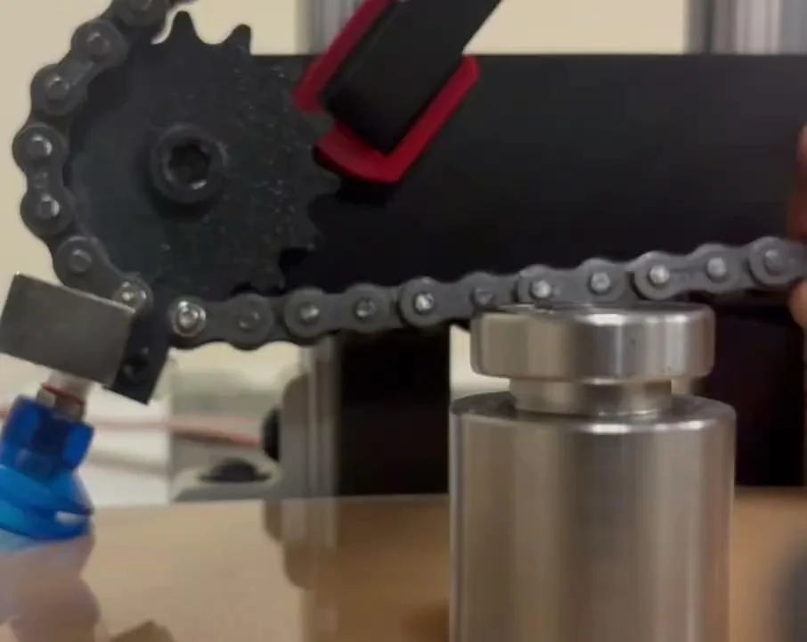
Chain and sprocket behavior test

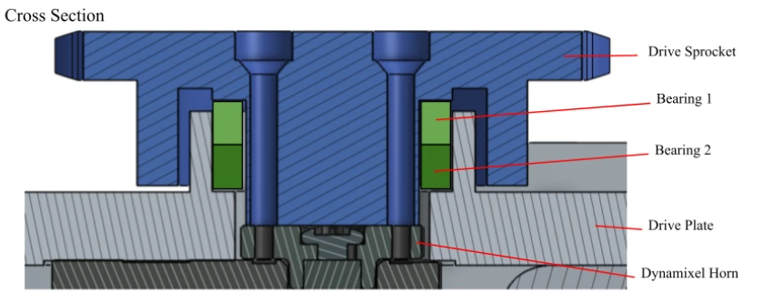
Bearing stack between the drive sprocket and plate, over the Dynamixel horn

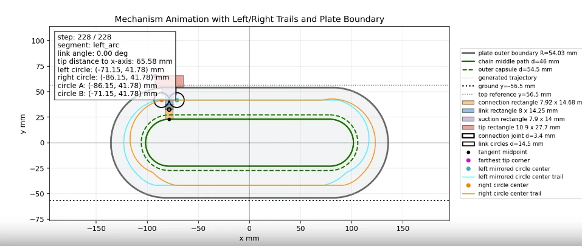
Mechanism simulation of the chain path inside the plate boundary

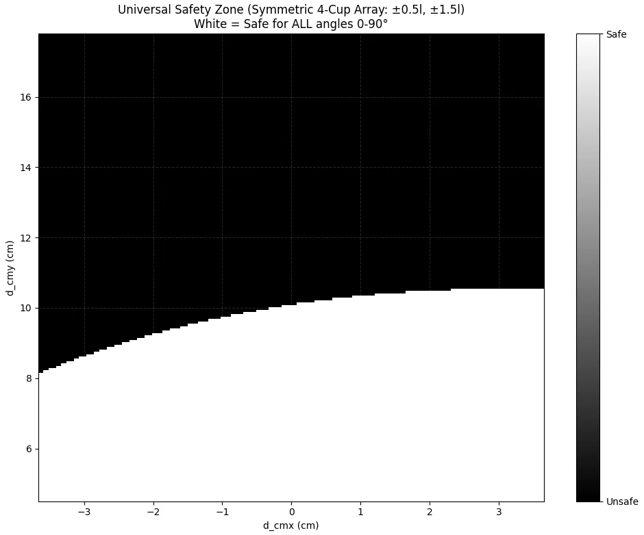
Safe COM region for all angles 0–90°

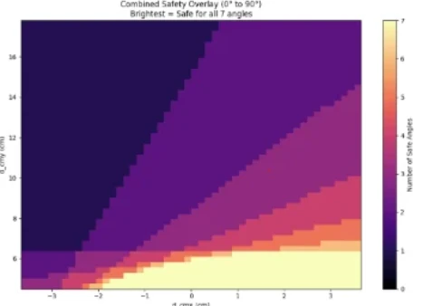
Number of safe angles across COM position

Pneumatic valves
Only the cups near the surface should draw vacuum. Each cup has its own valve, switched by an external magnet. The first version’s steel ball leaked and stuck once vacuum pulled it in. The second uses an internal magnet and a silicone O-ring, and it was made chain-mountable and self-sealing. It held for one minute under a 2 kg load at 0.47 A.


Full-system testing
In Summer 2026 we tested the assembled robot. Each failure that showed up drove a design change:
- Two motors overloaded intermittently, so the drive moved to four Dynamixels for torque margin
- Sprockets turning on screw axes wobbled, so the sprocket and shaft were combined and carried on two bearings
- The drive plate flexed, so supporting beams were added
- On vertical surfaces the chain sagged and incoming cups couldn’t reach the wall, so guide rails were added along the cup path
- Cup lips folded when they met the wall at a different speed, so the rail profile now matches each incoming lip’s speed along the surface


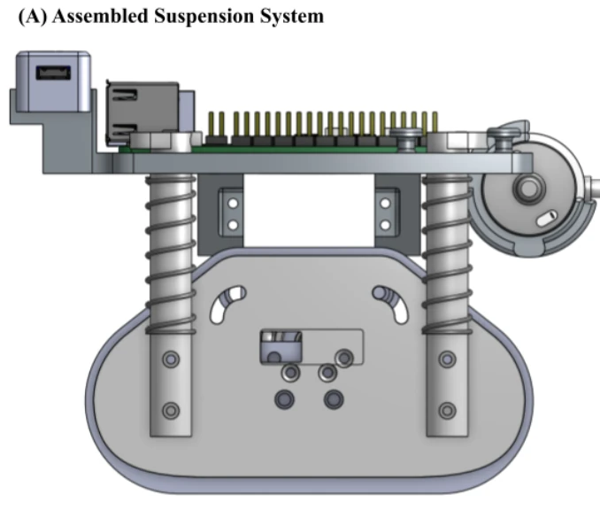
Compression springs acting along guide beams

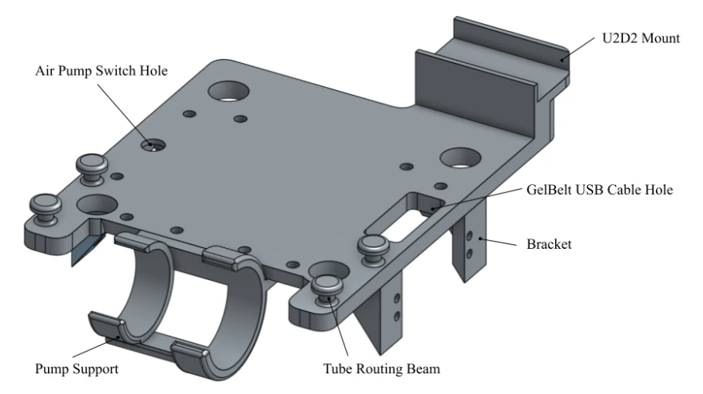
Separable pump support, brackets, and tube-routing beams


- Suction cupVinyl, bellowed, on a chain-mounted magnetic valve
- Drive sprocket and chainRoller chain driven by Dynamixel servos
- Vacuum tubingOne pump, distributed to every cup
- Raspberry Pi 5Runs control and the GelBelt camera, with servos on a U2D2

Status
- Adhesion and suspension validated, including inverted and curved-surface tests
- Static attachment to walls and aircraft skins demonstrated
- Upper guide rails designed but not yet tested
- Next: full climbing and contact tests, reconstruction accuracy on the robot, then curves and steering
Driving on a flat surface
Chain drive running, from above